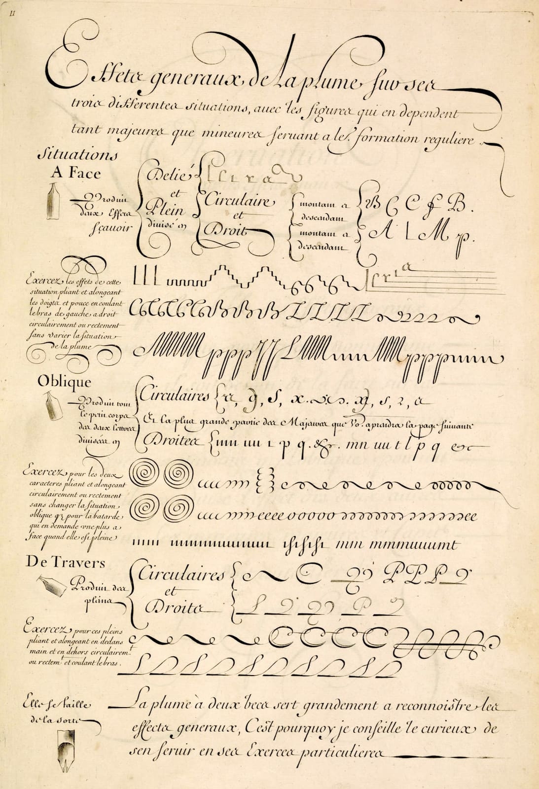

The team behind a native code editor explains why they draw every glyph themselves on the GPU instead of leaning on the platform's text stack. The short version: predictable frame times at 120 Hz were worth a year of work on font shaping, atlas management and subpixel positioning — but the cost showed up in places they didn't expect.
Each visible line is shaped into runs, and each run is turned into a list of quads pointing at atlas coordinates. A single instanced draw call paints the whole buffer. The author shows the core of the vertex layout, kept deliberately small so the upload per frame stays below a few hundred kilobytes:
struct GlyphInstance {
origin: [f32; 2], // device pixels
atlas_rect: [u16; 4], // x, y, w, h in the atlas
color: u32, // packed sRGB
}Subpixel positioning is handled by rasterising each glyph at four horizontal offsets, which quadruples atlas use for body text but removes the "dancing letters" effect while scrolling.
We kept telling ourselves that text is just rectangles. It's rectangles until someone opens a file in Thai.
| Scenario | Before | After |
|---|---|---|
| Scroll a 50k-line file | 41 ms p99 | 6.2 ms p99 |
| Open project (cold) | 1.8 s | 1.1 s |
| Memory, idle | 310 MB | 355 MB |
The approach pays off for an application whose entire surface is text and which redraws constantly. The authors are candid that for most apps the platform text stack remains the right default, and that the accessibility work alone took longer than the renderer.